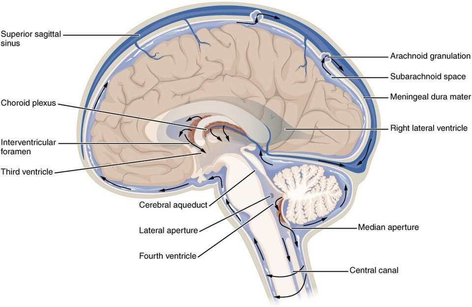

Un cerebro que flota
El cerebro es un órgano blando, con la consistencia de un flan o de tofu. Está protegido por el cráneo y por tres capas de membranas, las meninges, y flota en un líquido, el líquido cefalorraquídeo (LCR), que amortigua los golpes. Gracias a la flotación, el cerebro, que pesa unos 1.400 gramos, «pesa» solo unos 50 gramos dentro del cráneo, y no se aplasta con su propio peso.
Las meninges
De fuera hacia dentro:
| Capa | Características |
|---|---|
| Duramadre | Gruesa y resistente («madre dura»); pegada al cráneo; forma pliegues como la hoz del cerebro y la tienda del cerebelo, y los senos venosos que recogen la sangre |
| Aracnoides | Fina, con aspecto de tela de araña; debajo está el espacio subaracnoideo, lleno de LCR y con las arterias principales |
| Piamadre | Muy fina, pegada a la superficie del cerebro; sigue todos sus surcos |
Entre las capas se forman espacios donde puede acumularse sangre tras un golpe o una rotura de vasos:
- Hematoma epidural: entre el cráneo y la duramadre, por la rotura de una arteria tras un golpe; puede haber un intervalo lúcido antes de empeorar.
- Hematoma subdural: bajo la duramadre, por rotura de venas. El crónico, frecuente en mayores que toman anticoagulantes, puede aparecer semanas después de un golpe leve.
- Hemorragia subaracnoidea: casi siempre por la rotura de un aneurisma.
Ver traumatismo craneoencefálico.
Los ventrículos
Dentro del cerebro hay cuatro cavidades comunicadas entre sí, llenas de LCR:
- Dos ventrículos laterales, uno en cada hemisferio, en forma de «C».
- El tercer ventrículo, en el centro, entre los tálamos.
- El cuarto ventrículo, entre el tronco y el cerebelo, que se continúa con el canal central de la médula.
El líquido cefalorraquídeo


Es un líquido transparente como el agua. Lo fabrican los plexos coroideos de los ventrículos, a un ritmo de unos 500 ml al día, aunque en cada momento solo hay unos 150 ml: se renueva tres o cuatro veces al día. Circula desde los ventrículos laterales al tercero y el cuarto, sale al espacio subaracnoideo, rodea el cerebro y la médula y se reabsorbe a la sangre en las granulaciones aracnoideas y por vías linfáticas.
Sus funciones:
- Amortiguar golpes y movimientos.
- Mantener estable el medio químico del cerebro.
- Eliminar sustancias de desecho, sobre todo durante el sueño, a través del sistema glinfático, descrito en 2012.
Su análisis mediante una punción lumbar permite diagnosticar infecciones, hemorragias, esclerosis múltiple o alzhéimer.
Enfermedades
- Meningitis: infección de las meninges. Dolor de cabeza, fiebre y rigidez de nuca. La bacteriana es una urgencia.
- Hidrocefalia: acumulación de LCR por bloqueo de su circulación o de su reabsorción. Se trata con una válvula que deriva el líquido al abdomen.
- Hipertensión intracraneal idiopática: presión alta del LCR sin causa visible; riesgo de pérdida de visión.
- Hipotensión de LCR: por una fuga (espontánea o tras una punción); dolor de cabeza que aparece al ponerse de pie.
- Meningiomas: tumores, casi siempre benignos, que nacen de las meninges.
Fuentes
- Iliff JJ, et al. A paravascular pathway facilitates CSF flow through the brain parenchyma. Sci Transl Med. 2012;4:147ra111.
- Sakka L, et al. Anatomy and physiology of cerebrospinal fluid. Eur Ann Otorhinolaryngol Head Neck Dis. 2011;128:309-16.
- Blumenfeld H. Neuroanatomy through Clinical Cases. 3.ª ed. Sinauer; 2021.